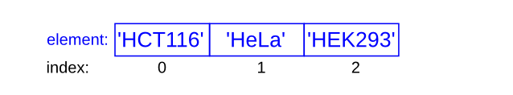
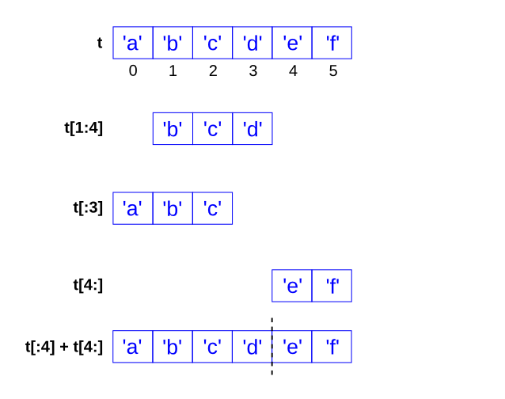

2. Lists¶
In this practical you will learn about the basic Python data type list.
2.1. Introduction to lists¶
A list is a sequence.
Like a string, a list is a sequence of values. In a string, the values are characters; in a list, they can be any type. The values in a list are called elements or sometimes items.
There are several ways to create a new list; the simplest is to enclose the elements in square brackets, [ and ]:
numbers = [10, 20, 30, 40]
cell_lines = ['HCT116', 'HeLa', 'HEK293']
The first example is a list of four integers. The second is a list of three strings. The elements of a list don’t have to be the same type. The following list contains a string, a float, an integer, and (!) another list:
mixed_list = ['HeLa', 2.0, 5, [10, 20]]
A list within another list is nested.
A list that contains no elements is called an empty list; you can create one with empty brackets, [ ].
As you might expect, you can assign list values to variables:
cell_lines = ["HCT116", "HeLa", "HEK293"]
numbers = [17, 123]
empty = []
print(cell_lines, numbers, empty)
['HCT116', 'HeLa', 'HEK293'] [17, 123] []
Warning
Because list is the name of a built-in function, you should never use it as a variable name. In Jupyter notebook, if the syntax highlighting colors a variable name green it is a Python keyword or function. In that case, come up with a different variable name.
2.1.1. Lists are mutable¶
The syntax for accessing the elements of a list is the same as for accessing the characters of a string: the bracket operator. The expression inside the brackets specifies the index. Remember that the indices start at 0:
print(cell_lines[0])
HCT116
Unlike strings, lists are mutable. When the bracket operator appears on the left side of an assignment, it identifies the element of the list that will be assigned.
numbers = [17, 123]
numbers[1] = 5
print(numbers)
[17, 5]
The one-eth element of numbers, which used to be 123, is now 5.
You can think of a list as a relationship between indices and elements. This relationship is called a mapping; each index “maps to” one of the elements. This figure shows the state diagram for the list called cell_lines:

Lists are represented by boxes with the word “list” outside and the elements of the list inside. The variable cell_lines refers to a list with three elements indexed 0, 1 and 2. The list numbers contains two elements; the diagram shows that the value of the second element has been reassigned from 123 to 5. Finally, empty refers to a list with no elements. List indices work the same way as string indices:
Any integer expression can be used as an index.
If you try to read or write an element that does not exist, you get an IndexError.
If an index has a negative value, it counts backward from the end of the list.
The in operator also works on lists.
cell_lines = ['HCT116', 'HeLa', 'HEK293']
'HeLa' in cell_lines
True
'U2OS' in cell_lines
False
len gives the number of elements within a list:
len(cell_lines)
3
2.1.2. List operations¶
The + operator concatenates lists:
a = [1, 2, 3]
b = [4, 5, 6]
c = a + b
print(c)
[1, 2, 3, 4, 5, 6]
Similarly, the * operator repeats a list a given number of times:
[0] * 4
[0, 0, 0, 0]
[1, 2, 3] * 3
[1, 2, 3, 1, 2, 3, 1, 2, 3]
The first example repeats [0] four times. The second example repeats the list [1, 2, 3] three times.
2.1.3. List slices¶
A segment or subset of a list is called a slice, just like with a string:
letters = ['a', 'b', 'c', 'd', 'e', 'f']
letters[1:4]
['b', 'c', 'd']
letters[:3]
['a', 'b', 'c']
letters[4:]
['e', 'f']
letters[:]
['a', 'b', 'c', 'd', 'e', 'f']
If you omit the first index, the slice starts at the beginning. If you omit the second, the slice goes to the end. So if you omit both, the slice is a copy of the whole list.
Note how the start is always included, and the end always excluded.
This makes sure that t[:4] + t[4:] is always equal to t:
letters[:4] + letters[4:]
['a', 'b', 'c', 'd', 'e', 'f']

Since lists are mutable, it is often useful to make a copy before performing operations that fold, spindle or mutilate lists. A slice operator on the left side of an assignment can update multiple elements:
letters = ['a', 'b', 'c', 'd', 'e', 'f']
letters[1:3] = ['x', 'y']
print(letters)
['a', 'x', 'y', 'd', 'e', 'f']
2.1.4. List methods¶
Python provides methods that operate on lists. For example, append() adds a new element to the end of a list:
letters = ['a', 'b', 'c']
letters.append('d')
print(letters)
['a', 'b', 'c', 'd']
sort() arranges the elements of the list from low to high:
letters = ['d', 'c', 'e', 'b', 'a']
letters.sort()
print(letters)
['a', 'b', 'c', 'd', 'e']
Note: list methods are all void; they modify the list and return None. If you accidentally write letters = letters.sort(), you will be disappointed with the result.
letters = letters.sort()
print(letters)
None
reverse() reverses the order of the elements within a list
letters = ['d', 'c', 'e', 'b', 'a']
letters.reverse()
print(letters)
['a', 'b', 'e', 'c', 'd']
2.1.5. Deleting list elements¶
There are several ways to delete elements from a list. If you know the index of the element you want, you can use pop():
letters = ['a', 'b', 'c']
char = letters.pop(1)
print("letters:", letters)
print("char:", char)
letters: ['a', 'c']
char: b
pop() modifies the list and returns the element that was removed. If you don’t provide an index, it deletes and returns the last element.
If you don’t need the removed value, you can use the del operator:
letters = ['a', 'b', 'c']
del letters[1]
print(letters)
['a', 'c']
If you know the element you want to remove (but not the index), you can use remove():
letters = ['a', 'b', 'c']
letters.remove('b')
print(letters)
['a', 'c']
The return value from remove() is None.
To remove more than one element, you can use del with a slice index:
letters = ['a', 'b', 'c', 'd', 'e', 'f']
del letters[1:5]
print(letters)
['a', 'f']
As usual, the slice selects all the elements up to, but not including, the second index.
2.1.6. Lists and strings¶
A string is a sequence of characters and a list is a sequence of values, but a list of characters is not the same as a string. To convert from a string to a list of characters, you can use list:
seq = 'ACGT'
nucs = list(seq)
print(nucs)
['A', 'C', 'G', 'T']
The list function breaks a string into individual letters. If you want to break a string into words, you can use the split method:
s = 'TCGA ACGT NNNN ACAC'
t = s.split()
print(t)
['TCGA', 'ACGT', 'NNNN', 'ACAC']
An optional argument called a delimiter specifies which characters to use as word boundaries. The following example uses a hyphen as a delimiter:
s = 'AGTA-GGAT-GATC'
s.split('-')
['AGTA', 'GGAT', 'GATC']
join is the inverse of split. It takes a list of strings and concatenates the elements. join is a string method, so you have to invoke it on the delimiter and pass the list as a parameter:
t = ['AGTA', 'GGAT', 'GATC']
delimiter = '-'
delimiter.join(t)
'AGTA-GGAT-GATC'
In this case the delimiter is a hyphen character, so join puts a hyphen between words. To concatenate strings without spaces, you can use the empty string, ‘’, as a delimiter.
''.join(t)
'AGTAGGATGATC'
2.2. Glossary of list terms¶
list()index()len()sliceinappend()sort()reverse()pop()del()remove()split()(
join())
2.3. Exercises¶
Exercise 2.1
Carefully read the following code and run it in your notebook:
my_list = ['A', 'B', 'C', 'D']
print('The complete list is', my_list)
third_item_in_list = my_list[2]
print('Third item in the list is:', third_item_in_list)
Question: why do you use the number ‘2’ to retrieve the third item from the list, instead of the number ‘3’?
Now extend the code and create a variable that contains the value of the fourth item in the list, and prints this on the same line as the third item of the list. Make sure to give the new variable an appropriate name.
Exercise 2.2
Extend this code to add an extra line in which you append the integer 5 (not the string) to the list. Check your code by adding the necessary print statements.
my_list = [0,1,2,3,4]
print('The complete list is', my_list)
third_item_in_list = my_list[2]
print('Third item in the list is:', third_item_in_list)
Exercise 2.3
Look at the following code (do not run it yet): Question: what does the code do? Which value is printed to the screen? Run the code to check your answer.
my_list = [0,1,2,3,4]
my_list[2] = -1
print(my_list[2])
Exercise 2.4
Look at the following code (do not run it yet):
my_list = [0,1,2,3,4]
my_list[2] = -1
print(my_list[5])
Question: what does the code do? Why is there an error message?
Question: what is the lowest index number allowed to retrieve an item from a list and what is the greatest?
Exercise 2.5
Read the following code:
my_list = ['A','B','C',1,2,3,4]
my_list_index = 3
list_item = my_list[my_list_index]
print(list_item)
Question: which value is printed to the screen?
This code shows that you can also use a variable as the index to retrieve items from a list. Why is this useful?
Exercise 2.6
In the following code, change the value that is assigned to the variable start such that the value 2 is printed to the screen.
Note You are not allowed to make any other modifications!
my_list = ['A', 'B', 'C', 1, 2, 3, 4]
start = 0
my_list_index = start + 3
list_item = my_list[my_list_index]
print(list_item)
Exercise 2.7
Take the following sequence:
GCTTGACAGGTAGACAGGACCCATAGACAGGATAGACAGGTAGACAGGGATAGACAGGGATAGCCAGATAGACGATAGCGATGATAC
When this sequence is reversed there is a 6 base sequence motif starting at base position 35 that ends with AGG. Write the Python code to print this sequence starting from the sequence above.
Exercise 2.8
You are given two sets of transcription factors (TFs), tfs_1 and tfs_2:
tfs_1 = 'Oct4, Sox2, Nanog, Smad1, Klf4, Esrrb'
tfs_2 = 'CTCF, n-Myc, c-Myc, STAT3, Tcfcp2l1, Zfx'
Convert both of these to a
listMove the last TF from
tfs_1totfs_2, without typing the TF nameMove the two Myc TFs from
tfs_2totfs_1, so that they are the first two TFs oftfs_1, without typing the TF nameThere are always multiple strategies …. so do the same as in 3. but using a different method, still without typing the TF name
Exercise 2.9
The following list contains numbers:
nms = [199, 322, 244, 303, 325, 18, 303, 238, 9, 393, 285, 485, 337, 401, 307, 442, 389, 349, 275, 318, 290, 544, 372, 311, 187, 231, 230, 312, 388, 343, 263, 193, 416, 311, 156, 509, 468, 482, 397, 218, 90, 406, 608, 324, 151, 332, 217, 204, 158, 295, 345]
Copy-paste this list, and answer the following questions by using Python methods that we have covered so far:
What is the minimum?
What is the maximum?
What is the 10th percentile? This is the value below which 10% of the values in the list are found.